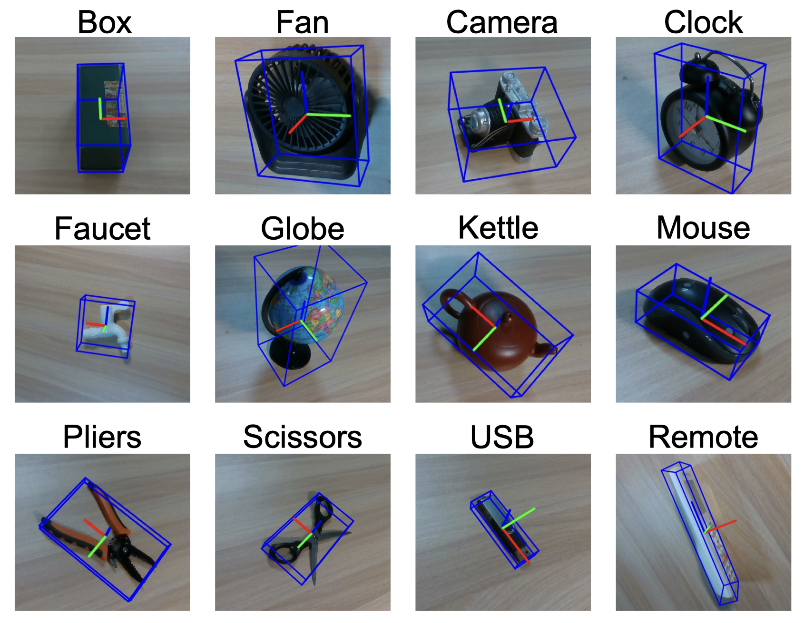
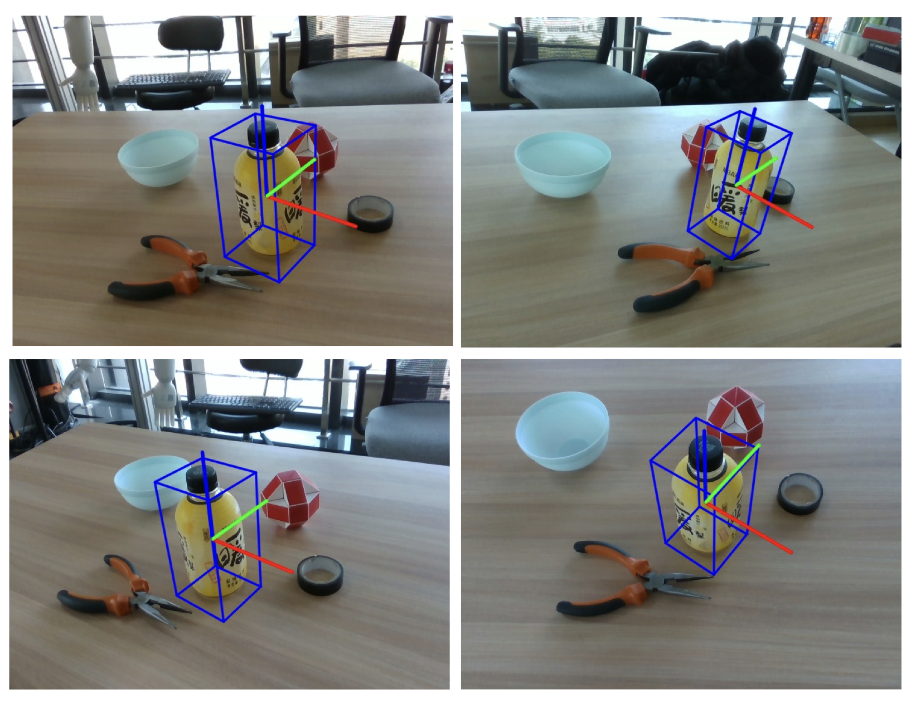

Example Qualitative Results of our Syn2Real Pose Estimation



Test results of single-object scene. We present a subset of the visualization results of the pose and size estimation using the trained MVPoseNet6D model. The outcomes are represented with a tightly oriented 3D bounding box and colored XYZ-axis.
The scene with same object under multiple views. We show the pose of a bottle under different views.
The scene with multiple objects under the same view. We show the pose estimation of different objects in several cluttered scenes.